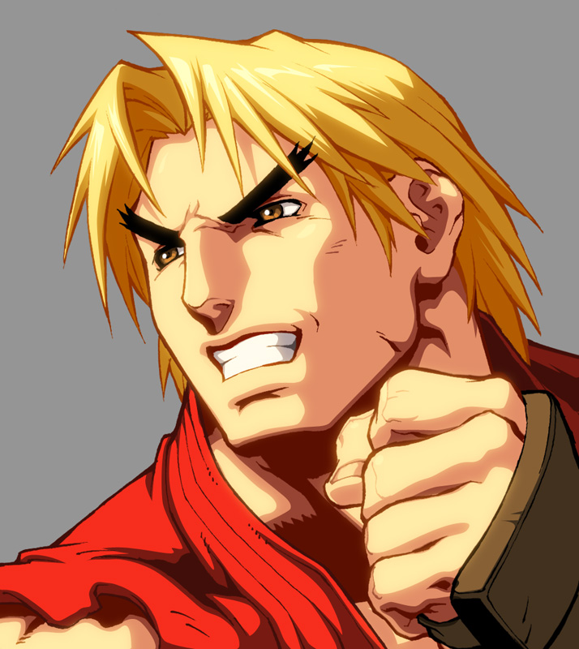

Ken was born in the USA and is a proud member of the multi-billionaire, Masters family.
 He trained in the martial arts alongside Ryu under Master Gouken as a young boy. Ryu is Ken's best friend, training partner and later a friendly rival. Ken has entered all kinds of martial arts tournaments and won many titles from his tours around the world. He has dyed blonde neck-length hair and a bright red uniform, which he uses to intimidate his foes in the ring. Unlike Ryu, who tries to learn new things from fighting to become a better warrior to help rid himself from the Satsui no Hadou, Ken has a loving relationship with his wife Eliza, with whom he has a son named Mel. Although his core fighting techniques are similar to Ryu's, their current training methods and overall personalities create subtle differences between them. While Ryu specializes in using his Hadouken based ki attacks, Ken has mastered and has enhanced the ki of the Shoryuken to a powerful effect. His improved Shoryuken ki techniques, mixed with the many other attacks at his disposal, make him a very capable and unpredictable opponent.
When Ken was only 12 years old, his father, a rich hotel tycoon, thought that his son should learn about more discipline from the outside world. He was afraid that his son would become a spoiled brat later on in his life and try to leech onto the Masters' family fortune. In order to do so, the elder Masters sent Ken to Japan to train under his best friend, the mysterious karate master Gouken. At first, Ken was very scared to learn from Gouken, wanting to go back to the United States, but shortly started to like him after seeing how nice he was. He even enjoyed the company of Gouken and his adopted son, Ryu, since he had a foil to finally pull pranks on to make him laugh, although Ken could not get him to do so at times. Ryu and Ken would later become best friends and each other's principal rivals. When Ryu was 23, Gouken decided that both of his pupils had grown up to be fine fighters and decided that their training was over and could now leave the temple. Ryu decided to travel the world in order to continue to learn new things, whereas Ken was finally happy to be going back home to the United States after his years of straining his back for master Gouken and finally learning the meaning of humility. After coming home, Ken competed in many different Martial Arts tournaments held in the United States, winning most of them.